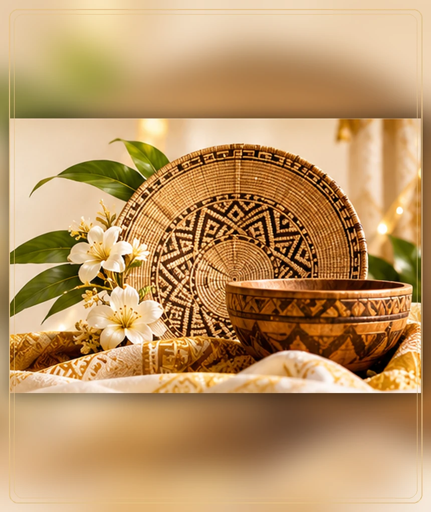
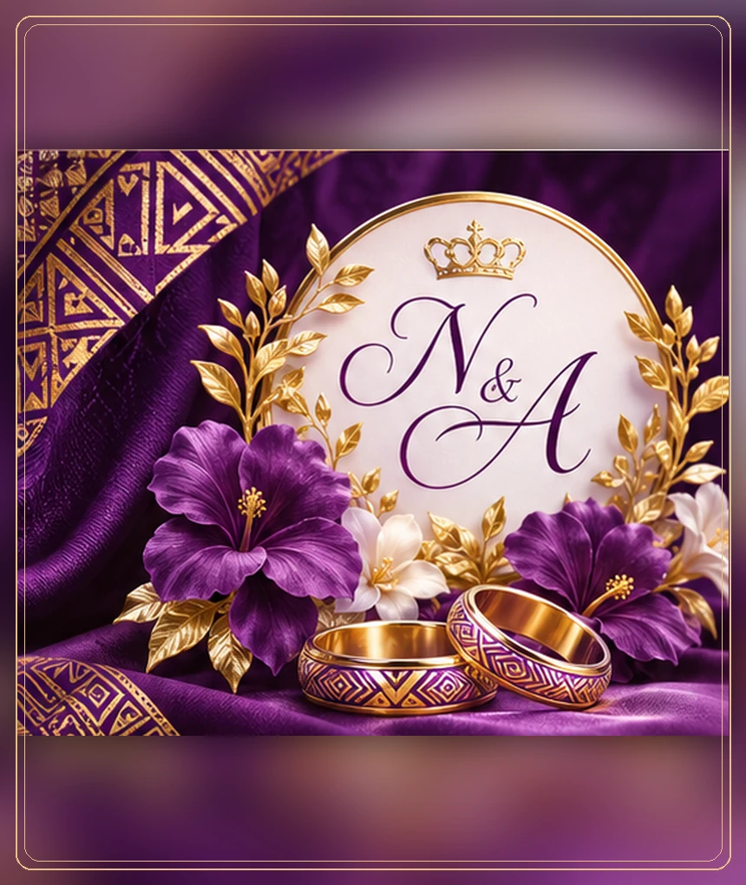

01 · Classique
L’Éternel.
Ivoire / or

Modèle 01 — Édition classique
L’Éternel
Une invitation royale et intemporelle. Typographie calligraphique, champagne, ivoire et délicates touches dorées.
Visiter ce site ↗Trois sites de démonstration pour célébrer un mariage coutumier. Même événement, trois identités artistiques, avec l’intégralité des informations accessible à tous.
Ivoire / or

Une invitation royale et intemporelle. Typographie calligraphique, champagne, ivoire et délicates touches dorées.
Visiter ce site ↗Éditorial / nuit

Une expérience immersive, inspirée des films et des albums photos. Noir, lumière dorée et narration émotionnelle.
Visiter ce site ↗Violet royal / or

Une célébration riche de traditions, moderne et chaleureuse. Violet royal, lavande, or, familles à l’honneur.
Visiter ce site ↗Les trois démonstrations affichent toutes les sections : accueil, histoire du couple, familles, programme coutumier, tenue, galerie, lieu, RSVP et contact direct. Les formulaires enregistrent les réponses uniquement dans le navigateur pour la démonstration.